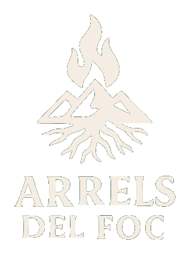
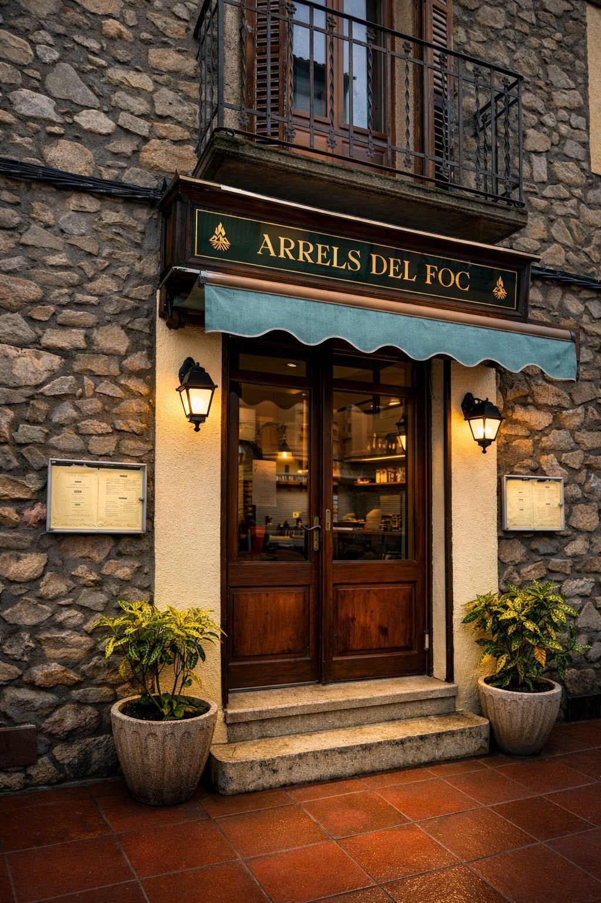
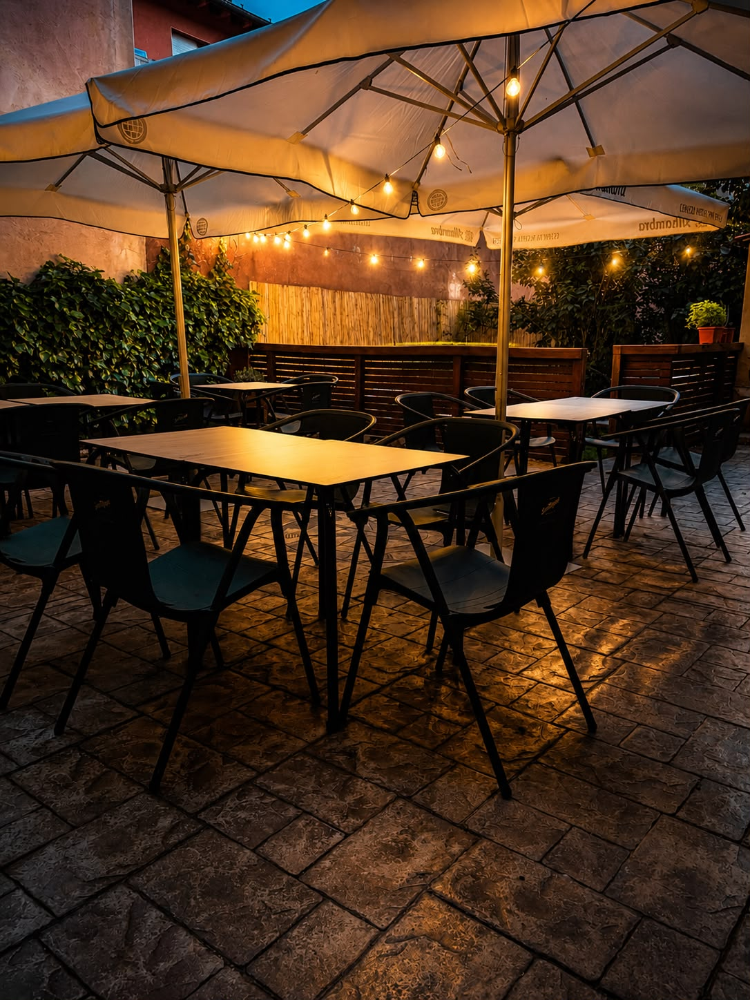
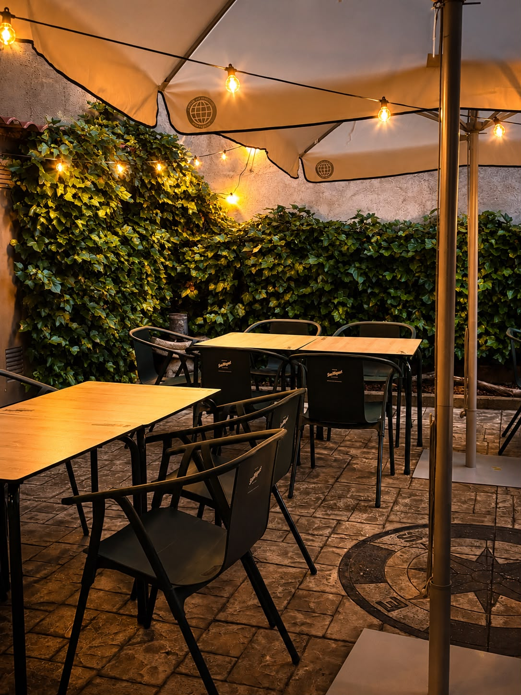
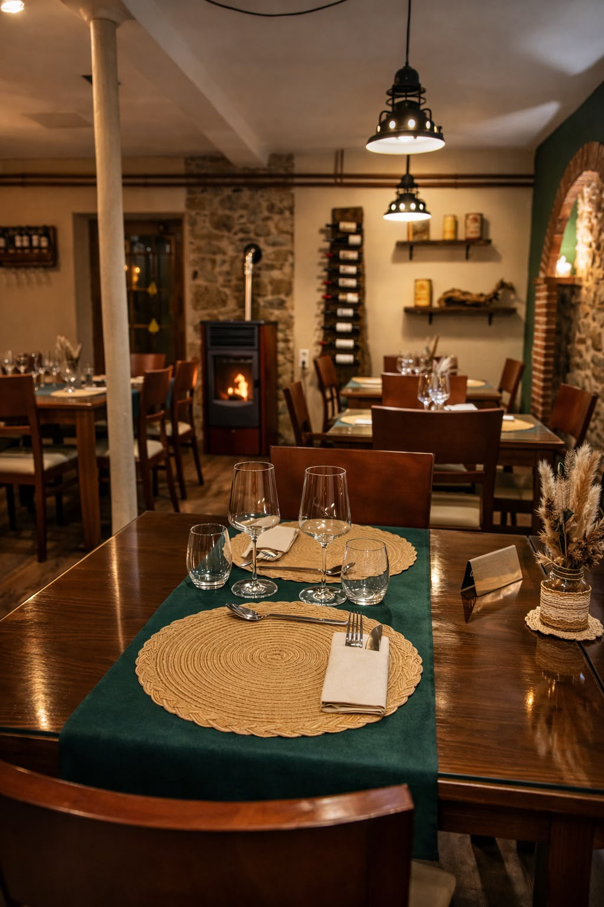
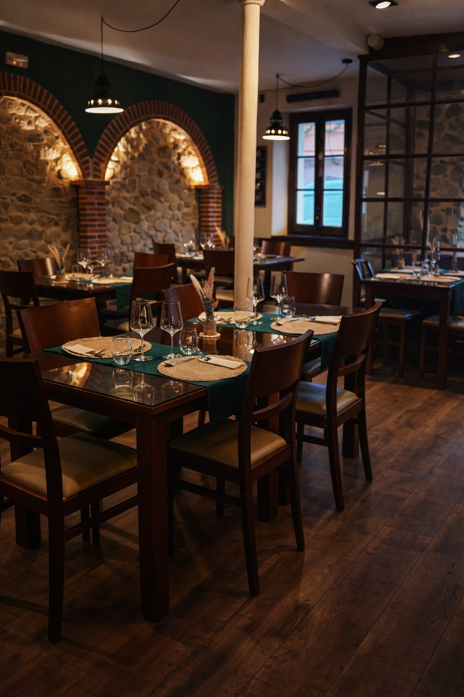
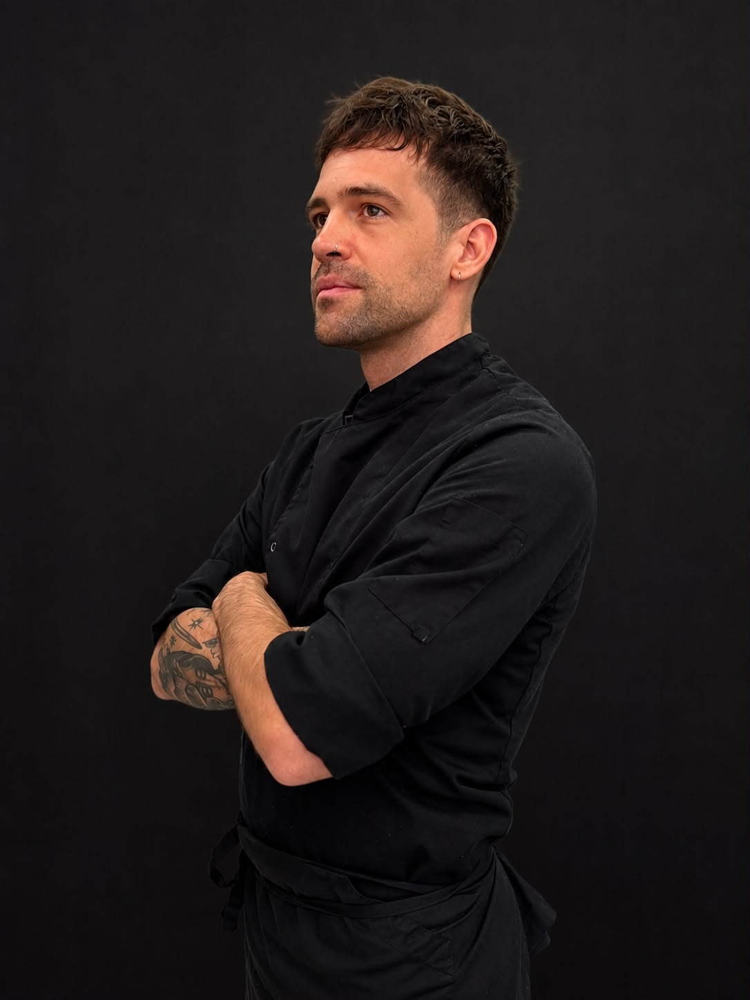

Cuina argentina al PirineuCuina argentina d'autor, al cor del Pirineu. Una cuina que neix de les nostres arrels, combina producte argentí seleccionat amb producte de proximitat i troba en el foc la seva manera d'expressar-se.






Avui Arrels som Bruno, Rodrigo i Valèria. Tres persones, tres maneres d'aportar a un mateix projecte: cuina, foc i sala.
Seguim darrere de cada servei, fent créixer amb les nostres pròpies mans el restaurant que un dia vam imaginar al Pirineu.
Ens trobareu al Carrer del Segre, 13D, sobre la carretera principal de Martinet i a pocs passos del riu Segre.